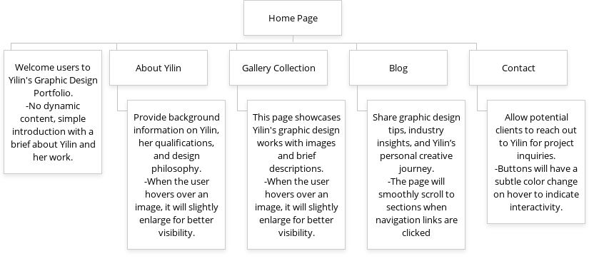

Project Overview: Yilin's Graphic Design Portfolio
Application and Purpose
The website will serve as an online portfolio for Yilin, a freelance graphic designer. The purpose of the site is to showcase her design projects, allowing her to present her work to potential clients and employers in a professional manner. The website will include a gallery section for her work, a contact page for inquiries, and a blog where Yilin can share design tips and insights.
Intended Users
The primary users of the website will be individuals or businesses looking to hire a freelance graphic designer. Secondary users may include design enthusiasts and students who are interested in Yilin’s work and professional journey.
Client Information
- Name: Yilin Wang
- Organization/Business: Freelance Graphic Designer
- Email: Yilin0526@gmail.com
- Phone: [private]
Dynamic Functionality on the Website
- Image Hover Effect: When the user hovers over an image, it will slightly enlarge for better visibility.---css-tricks.com
- Button Animation: Buttons will have a subtle color change on hover to indicate interactivity.---dribbble.com
- Smooth Scroll: The page will smoothly scroll to sections when navigation links are clicked.
Site Map
The following image provides an overview of the website structure:
